New A fresh look in version 2.1
Snap something wild.
Plants, bugs, birds, mushrooms. Find out what it is, if it belongs here, and if it's at risk.
Free. No ads, no account, no tracking.
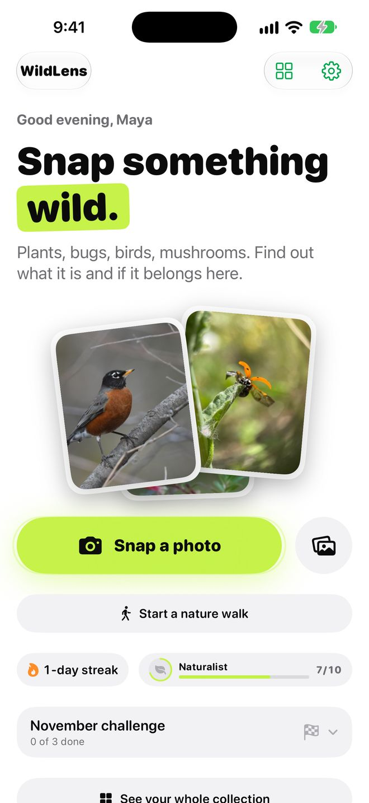
- 16,800species it knows
- ~1 secto name what you found
- 9languages
- 0accounts, ads or trackers
Three taps to a field guide.
No setup and nothing to learn. Open it and point.
Snap it
Take a photo or pick one from your library. Location data is stripped before anything else happens.
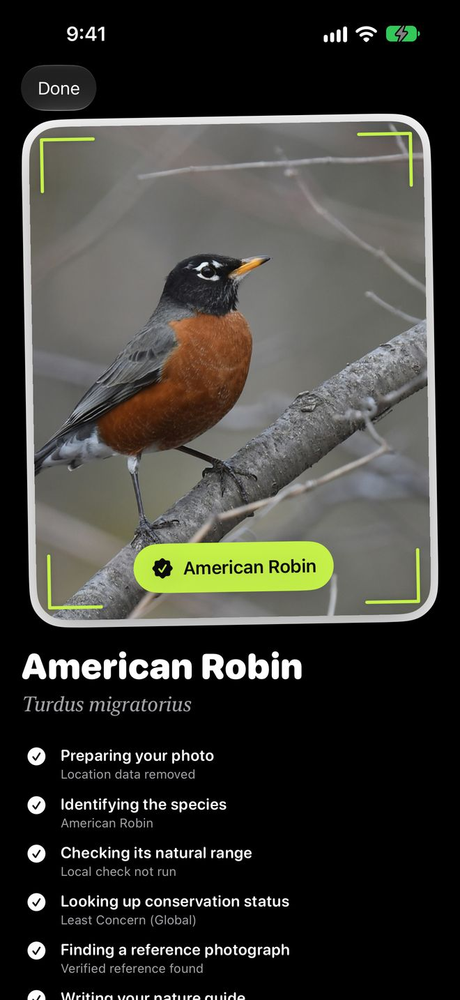
Name it
WildLens locks on and shows the name, how sure it is, and a short guide to what you found.
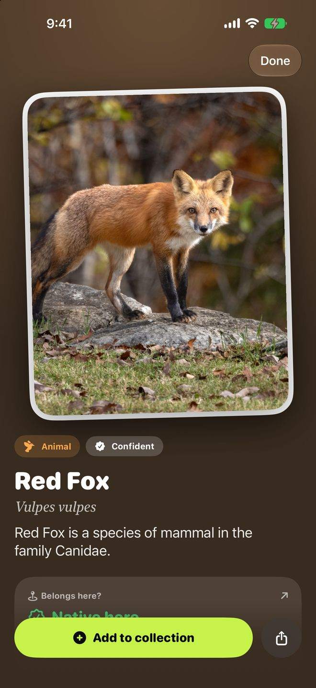
Collect it
Every find becomes a numbered card in your collection, with badges to earn along the way.
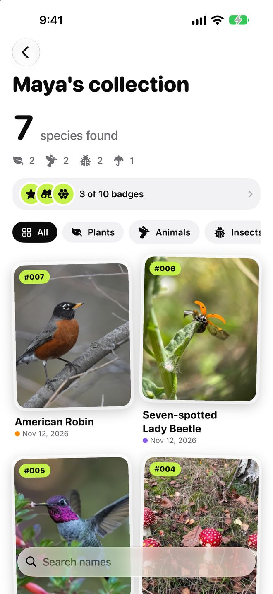
More than a name.
Each find comes with answers built from real scientific sources. Tap through to see them.
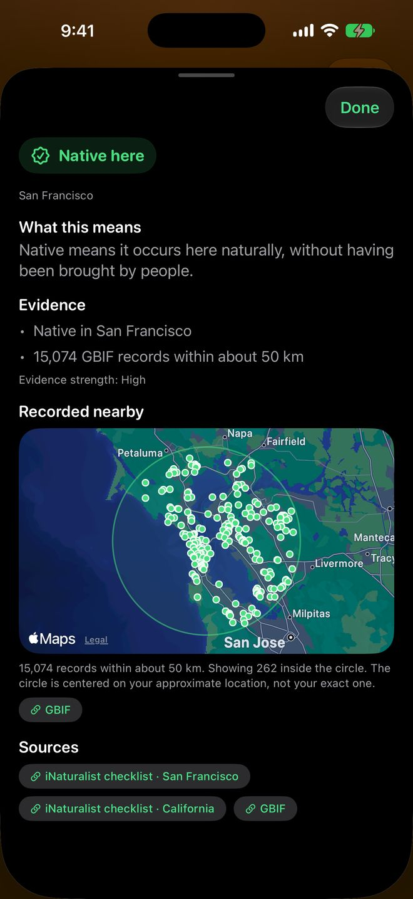
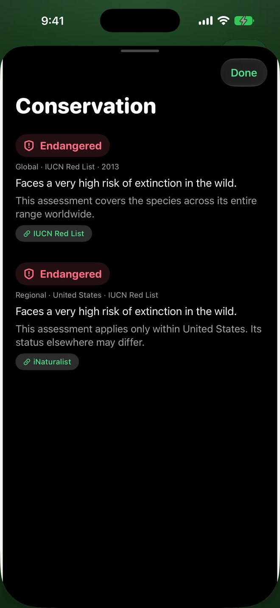
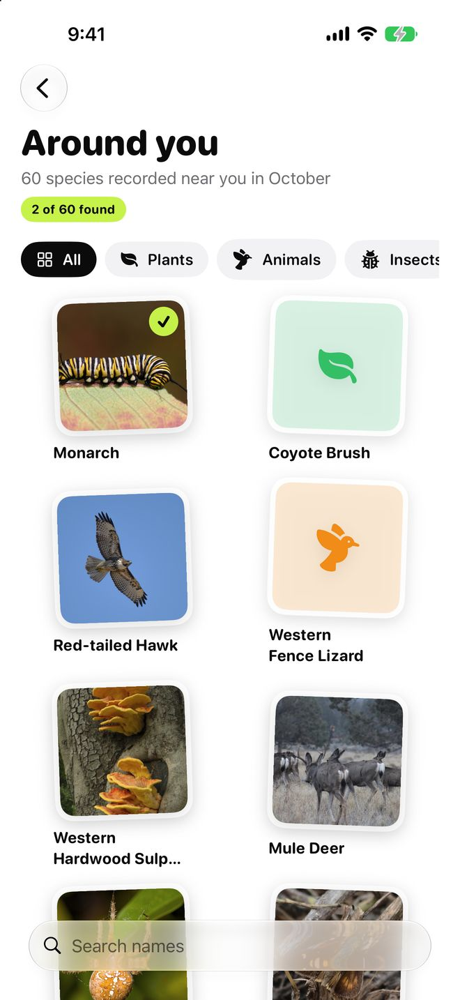
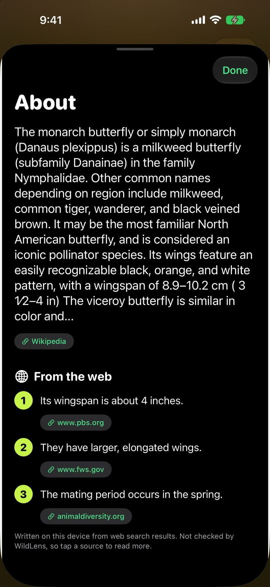
Native, introduced or invasive where you are, with a map of real records nearby.
Watch it work.
Thirty seconds of the real app.
Every screen, up close.
Real screens from version 2.1.
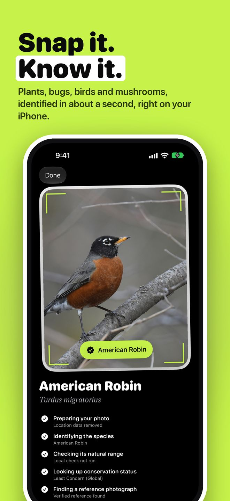
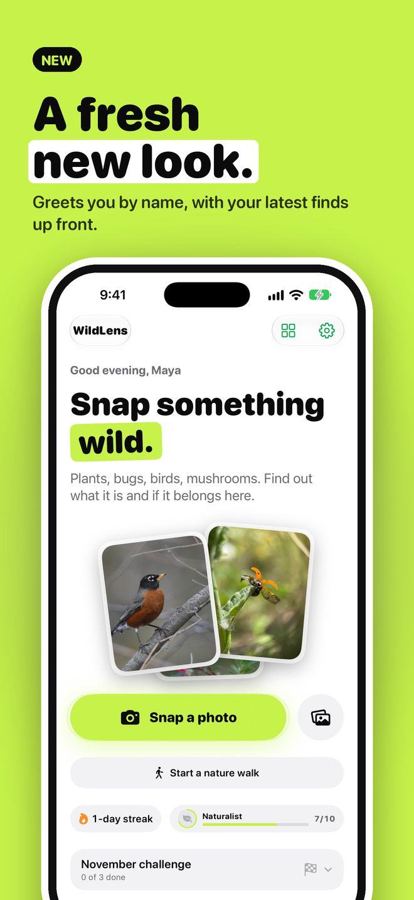
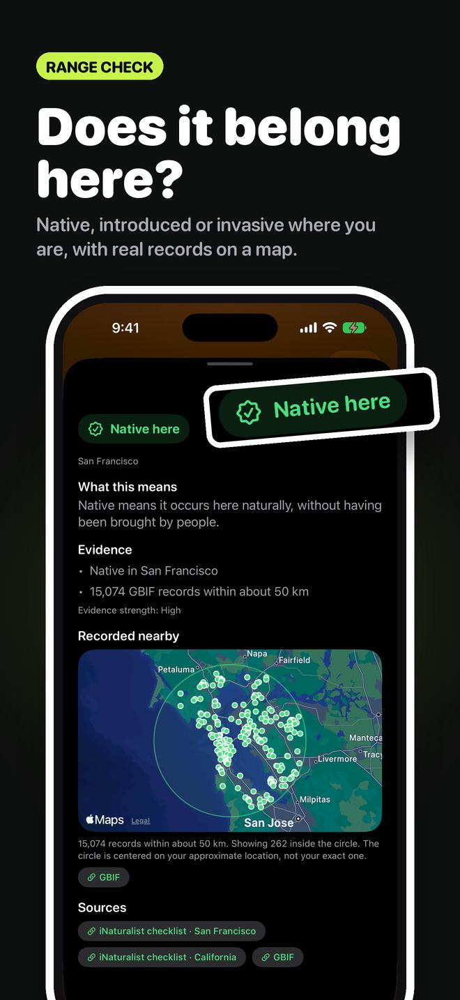
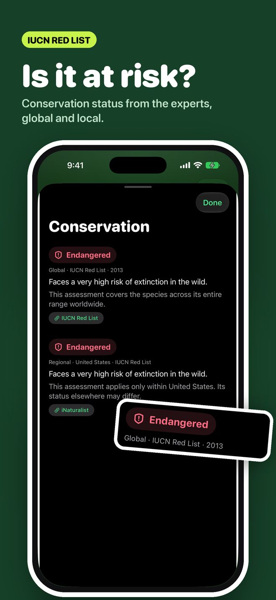
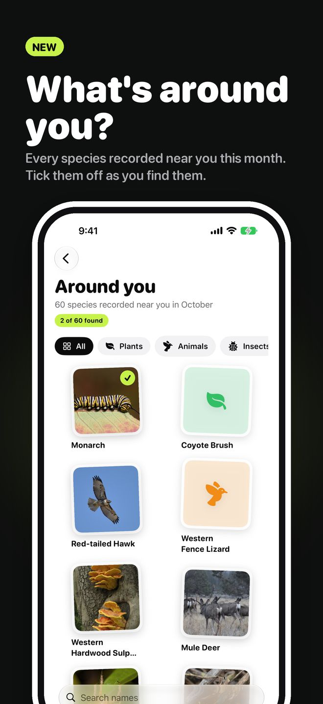
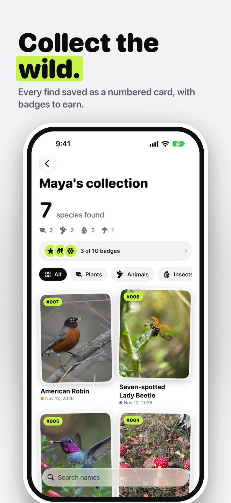
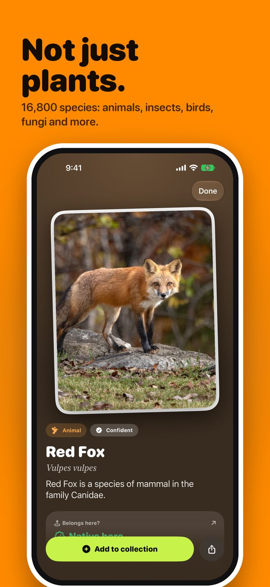
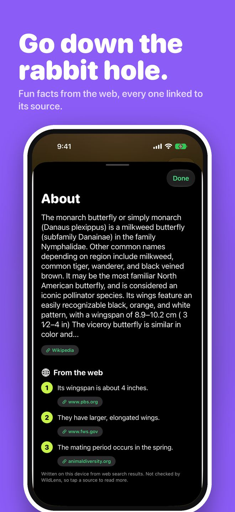
Private by design.
Download the on-device identifier once and your photos are identified right on your iPhone: 16,800 species, offline, with no limit.
No account
No sign-in, email or password. Your collection lives on your phone.
No tracking
No ads, no analytics SDKs, no selling data. Location is rounded and only used to check ranges.
Your choice to share
Help improve WildLens and science by sharing finds, or don't. Delete what you shared anytime. Read the privacy policy.
Good questions.
The short answers. There's more on the support page.
Is it really free?
Yes. There are no ads, no subscription and nothing to unlock.
Does it work without signal?
Yes, once you've downloaded the on-device identifier. Names work offline; range maps and fun facts need a connection.
Who decides what the species is?
An image model picks the name. Whether it's native or at risk comes from iNaturalist, GBIF and the IUCN Red List, never from a chatbot's guess.
What happens to my photos?
They stay on your iPhone unless you choose to share a find. Read the details in the privacy policy.